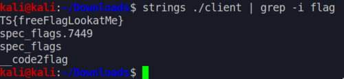
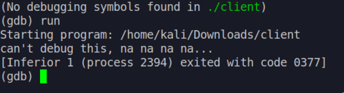
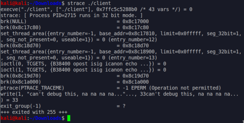
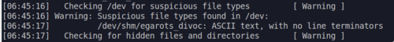
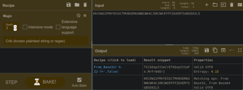

I joined the Defcon Red Team Village CTF because I was curious about it and I wanted to test out the skills that I have gained playing with CTF sites like overthewire.org and vulnhub. I knew that the challenges won't be easy, but thankfully, I was able to join up with other newbies who were willing to give it a go and learn with each other.
Unfortunately, I fell asleep just before the CTF started and when I woke up all the easy challenges were already solved by my team members. There was one easy challenge that was still open on the CovidScammers category, so I quickly got started to solving that.
Free Flag (and binary) [1 point]
You've been contacted by a high-end but morally ambiguous finance company (unhackable-bitcoin-wallet.com) to investigate a data breach. The box in question is a mail server in their internal network, a sample of the malware found on the system has been pulled and given to you. Your task, should you choose to accept it, is to reverse-engineer the sample and locate, fuzz and exploit the C2 server, and then hack-back to learn about the malicious actor and recover the stolen documents. Look for the free flag. Get on the scoreboard!
I admit that in a hurry to get points I did not properly read the description of the challenge. I understood that I'll be downloading and reverse-engineering something. But it did not register on my mind that it's actually malware.
The download was a binary that doesn't do anything when run. My first instict was to use strings to look for the flag, which turned out to be correct.

The flag is: TS{freeFlagLookAtMe}.
Unfortunately, this challenge was already solved by a team member so I did not get the free flag. The second one, is still open though.
Syscalls [5 points]
What syscall is hindering your dynamic analysis? Flag is just the syscall, no brackets or anything.
If we run the file from within gdb to debug it we get:

can't debug this, na na na na...
So from the description we are looking for a syscall that is hindering the debugging of the binary. If we want to find out what syscalls are called by a program, we could determine that using the strace command.

Just before the write syscall for the "na na na" message we see:
ptrace(TRACE_TRACEME) = -1 EPERM (Operation not permitted)
I'm unfamiliar with ptrace so I researched it and tried to understand how it could prevent debugging. I learned that ptrace can be used as an anti-debugging technique as can be seen here.
Sure, enough the flag is: ptrace.
I got 5 points from this and I finally have a contribution to my team! Unfortunately, real life prevented me from continuing with the CTF and I had to bow out early.
Sidenote: How to bypass ptrace?
How does one bypass this anti-debugging feature? Here's one approach that I tried which should work in theory but doesn't. My guess is that this particular binary has an additional way to prevent debugging, like it spawns a child process and it stays there even if you bypass ptrace. I'd have to look into this further in the future.
Shared Secrets [150 points]
The malware creates a shared-memory object and stores a flag inside. Recover the flag. Flag has the TS{} format, you'll know when you get it.
I was able to solve this challenge after the CTF preliminaries ended. By this time I was already well rested and have a clearer mind. It was also at this time that I realized that the file is actually a malware and has already infected my machine. Thankfully, I was running a virtual machine which meant I could just revert back to an old working restore point.
Knowing that the file is a malware, the next step I did was to run rkhunter to look for rootkits and suspcious files. This gave me an interesting finding:

Opening the suspicious file revealed this:
KRJXW22FMVYES5CTMVBXERKUNNCWK4CJORJWCRTFFZGXERTSGBSE6IL5
This is not the flag yet, it needs to be in the "TS{}" format as instructed in the challenge description.
I initially had a hard time figuring out how to decode this. It wasn't base64 nor any other popular encoding. Thankfully, there are tools like CyberChef to help with this kind of problem. After some experimentation, the "magic" recipe did the trick and revealed to me that it was actually a base32 encoding.

This gave me the flag: TS{kEepItSeCrETkEepItSaFe.MrFr0dO!}
License and Registration [100 points]
The malware creates a UUID and stores it in a file, what is the name of this file. Provide the SHA1 hash of hte full path as the flag.
So the description above says that a file is created by the malware and stores data inside of it. I figured that the easiest way to figure out what this created file is to:
- Restore to a previous restore point before I opened the malware
- Run the malware, and then;
- Inspect which other files were created at the time of execution.
I found out which files were recently created during the last 2 minutes using the following command:
$ find / -user kali -mmin 2 -type f 2> /dev/null
This showed me a lot of files, but after sifting through that I found one file that seesm promising.
/tmp/.serverauth.tn6aUcM0uM
To get the flag I did this:
$ echo -n "/tmp/.serverauth.tn6aUcM0uM" | sha1sum
Which resulted in this flag: 5b4e97047851682649a602ad62ba4af567e352a3
To be continued?
So I wanted to try and work on the other challenges but it seems that the ctf site is currently down. The site redirected to a different non https site and it spooked me so I stopped trying. Good thing that I had NoScript on.
If you want a longer and more pro writeup about the CovidScammers challenges do check out 0xdf's writeup about it.
I later competed in another CTF — the Hunt the Kingdom blue team challenge, where I placed first.
Running malware safely requires a proper isolated environment — see how I set up my virtual cybersecurity home lab.